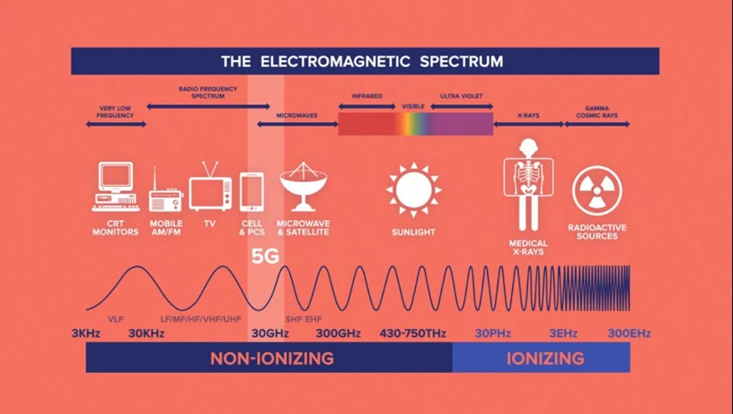

Frequencies used for 5G do expose you to radiation, but that doesn’t mean they cause cancer.
5G is the 5th Generation of mobile networking, being faster than 4G and previous versions. It’s also fairly new. Mobile networking is important, being that it is wireless communication. It’s what’s behind Wi-Fi, your phones calling and texting, and Bluetooth. Those are just some examples. But how is it wireless?
How does the information we get travel through it?
Radiation may seem scary. A concern is completely understandable. Higher frequencies (more intense) for an extended period of time have been known to cause illnesses; Cancers and malformities. Even immediate death. For example, think about the Chernobyl nuclear meltdown. That was all radiation of extremely high frequencies. Gamma radiation, actually.
So being wary of the effects of 5G on living beings is completely okay. But let’s talk about that type radiation for a moment. The frequency 5G is, is on the higher end of Radio Frequencies. People are exposed to radio waves every day. These being in things such as Radio, Television, and computers. And all of these including the frequency of 5G have less radiation than sunlight, which we are also exposed to all of the time.
Think: Are you afraid of radiation poisoning from listening to the radio? Or microwaving your food? Because there isn’t any higher risk from being around 5G networking than from those.
Here’s a comparison guide:
Looking at the spectrum, you may notice it doesn’t even compare to the same amount of radiation from light. Which is also much less than the radiation that has been known to cause extreme health problems. Those are considered to be “ionizing” radiation at the far end of the spectrum.
Now think about this: Is light dangerous to your health?
Light is essential to perceive everything we see, whether it’s artificial light or directly from the sun. Sunlight can also make your skin produce its own vitamin D.
You can reference the electromagnetic spectrum, but sunlight is Ultraviolet Radiation, which prolonged exposure to can cause skin cancers (commonly Melanoma).
So, are you wary of sunlight exposure?
As long as you limit yourself to how much direct sunlight you get on your skin, and put sunscreen on intense days, you can reduce that risk of developing skin cancer. That may be something you do anyways. It’s just a natural form of radiation that you have to live with; People have to deal with it.
In comparison, 5G networking has much less radiation than UV from sunlight. The maximum frequency of 5G is 86GHZ, which is within the radio wave spectrum and considered safe. It is apparent that radio waves can cause heating, but not strong enough to have any consequential effect. According to Dr Simon Clarke, associate professor in cellular microbiology at the University of Reading, (England) said:
“Radio waves can disrupt your physiology as they heat you up, meaning your immune system can't function. But 5G radio waves are tiny and they are nowhere near strong enough to affect the immune system.”
In conclusion, 5th Generation Mobile networking runs on electromagnetic radiation. Specifically, hose of the radio wave category; being low and widespread. Which are also used by many other technological devices you are already accustomed to. As a comparison, the wave frequency 5G runs on has far less radiation than the sun, which most people don’t complain about.
Due to this, it’s unlikely 5G will not continue to be imputed into society. Companies are racing to have the fastest or largest 5G networks, not just for customers, but are expected to fuel transformative new technologies in infrastructure, defense, and medicine. It won’t be going away anytime soon.
If you decide to be cautious about 5G and other mobile networking frequencies, make sure as well to be cautious of light, UV radiation, even X-rays, and finally the tech you’re exposed to everyday in this advancing world.
That also includes however you’re viewing this website.